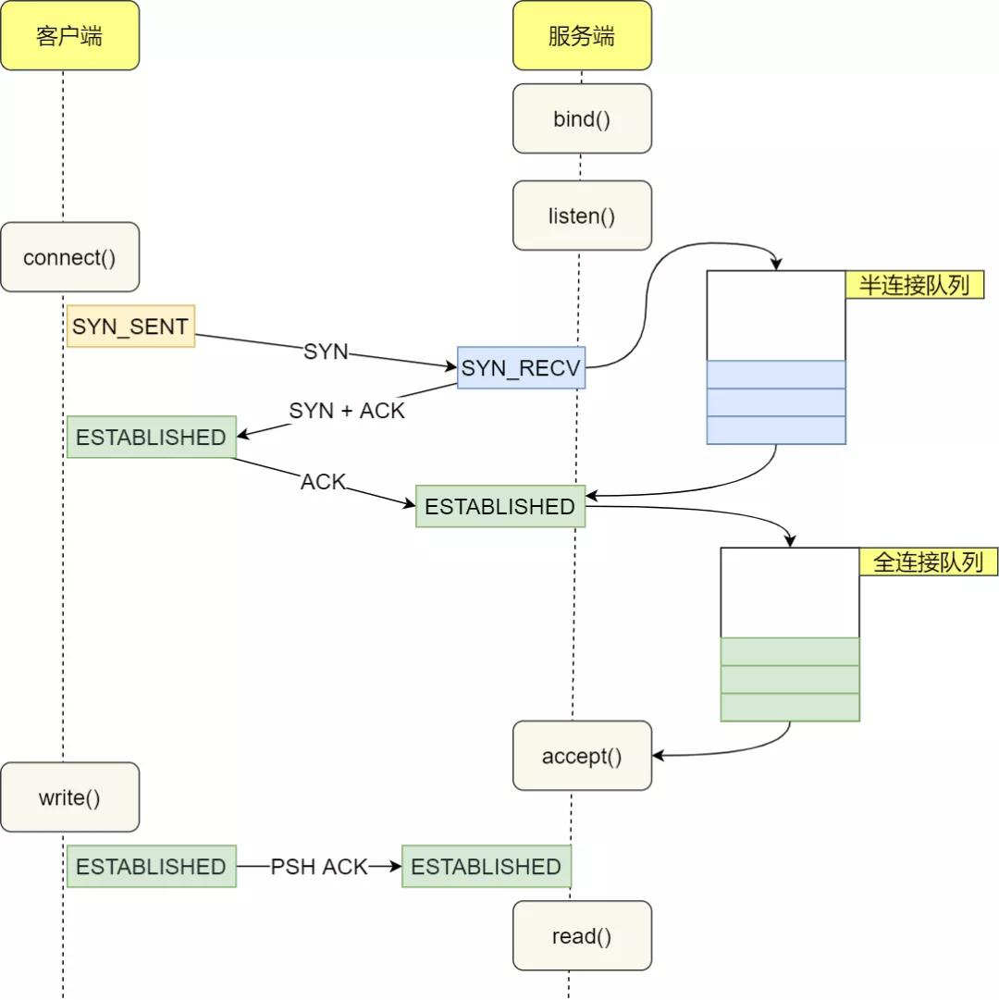

0、写在之前
准备继续写博了，起因是看到一位年轻且有实力的博主的一段话，大体意思如下：写博客不希望多少人能看到，但是几十年后自己能看看走过的路也挺好，
然后感觉被什么击中了。个人年前工作进行了调整，技术栈有了很大的变化，正好也可以记录一下对新技术栈的学习使用过程。
一、为什么TCP建连需要三次连接
TCP作为常见的面试题，大多数会问题三次握手、四次挥手、time_wait、close_wait状态在什么情况下会出现。有考虑过为啥要三次握手？
① TCP连接是什么？
借用一下别人的总结：TCP连接是用于保证可靠性和流控制机制的信息，包括 Socket、序列号以及窗口大小。
② 假设2次握手
如果是2次握手，client端发起请求，但是server端只能选择接收或者拒绝，当在网络波动时，client端重复发送请求时，server端如何判断是历史请求
还是当前请求呢？当使用三次握手来建立连接并在连接引入了 RST 这一控制消息，接收方当收到请求时会将发送方发来的 SEQ+1 发送给对方，
这时由发送方来判断当前连接是否是历史连接：如果当前连接是历史连接，即 SEQ 过期或者超时，那么发送方就会直接发送 RST 控制消息中止这一次连接；
如果当前连接不是历史连接，那么发送方就会发送 ACK 控制消息，通信双方就会成功建立连接；
③ 假设四次握手
四次握手，比如cient发送syn请求，server先回复ack确认包，再发送syn包，最后client再发送ack包，这样四次握手也可以正常建连。
其实设计者在追求的建立连接的最少次数，因为总可以使用更多的次数来交换相同的信息。
二、握手时的异常情况
① client的第一个syn包丢了
如果客户端第一个SYN包丢了，TCP 协议中，某端的在一定时间范围内，只要没有收到应答的包，无论是请求包对方没有收到，还是对方的应答包自己没有收到，
均认定为是丢包了，会触发超时重传机制。所以此时会重传SYN包。根据《TCP/IP详解卷Ⅰ：协议》中的描述，会尝试三次，间隔时间分别是 5.8s、24s、48s，
总的尝试时间是 75s。
② server回复的syn+ack包丢了
此时服务端已经收到了数据包并回复，如果这个包丢了，如第一步说的，client会认为自己的syn包丢了，client就会继续重传。server端在一定时间内没有
收到客户端发来的ack包，也会触发重传，此时server处于 SYN_RCVD 状态，会依次等待 3s、6s、12s 后，重新发送SYN,ACK包。而这个重传次数，linux下
可以通过 tcp_synack_retries 进行配置，默认值为 5。如果这个重试次数内，仍未收到，那么服务端会自动关闭这个连接。同时由于client也会进行重传，
server收到后，会立即重新发送SYN+ACK包。
③ client的syn+ack包丢了
如果最后一个包丢了，server因为收不到走重传机制，而client ESTABLISHED 状态。client进入 ESTABLISHED 状态后，认为连接已成功建立，会立即发送数据。
但是服务端因为没有收到最后一个ACK包，依然处于 SYN-RCVD 状态。那么server收到了client的包会怎么处理呢？其实当客户端在 ESTABLISHED 状态下，
开始发送数据包时，会携带上一个ACK的确认序号，所以三次握手的最后一个包丢了，服务端在收到这个数据包时，能够通过包内 ACK 的确认序号，
正常进入 ESTABLISHED 状态
三、3次握手时server端有syn_rcvd和ESTABLISHED状态，真实场景下会有很多连接同时建立，server端是怎么处理的呢
半连接队列（Incomplete connection queue），又称 SYN 队列
全连接队列（Completed connection queue），又称 Accept 队列
当客户端发起 SYN 到服务端，服务端收到以后会回 ACK 和自己的 SYN。这时服务端这边的 TCP 从 listen 状态变为 SYN_RCVD (SYN Received)，
此时会将这个连接信息放入半连接队列，半连接队列也被称为 SYN Queue。
服务端回复 SYN+ACK 包以后等待客户端回复 ACK，同时开启一个定时器，如果超时还未收到 ACK 会进行 SYN+ACK 的重传，重传的次数由 tcp_synack_retries
值确定（和上边说的对上了）。一旦收到客户端的 ACK，服务端就开始尝试把它加入另外一个全连接队列（Accept Queue）。
半连接队列的大小与三个值有关：
用户层 listen 传入的backlog
系统变量 net.ipv4.tcp_max_syn_backlog，默认值为 128
系统变量 net.core.somaxconn，默认值为 128
全连接队列包含了服务端所有完成了三次握手，但是还未被应用调用 accept 取走的连接队列。此时的 socket 处于 ESTABLISHED 状态。
每次应用调用 accept() 函数会移除队列头的连接。如果队列为空，accept() 通常会阻塞。全连接队列也被称为 Accept 队列。
TCP 全连接队列的最大长度由 min(somaxconn, backlog) 控制，其中：
somaxconn 是 Linux 内核参数，由 /proc/sys/net/core/somaxconn 指定
backlog 是 TCP 协议中 listen 函数的参数之一，即 int listen(int sockfd, int backlog) 函数中的 backlog 大小。
在 Golang 中，listen 的 backlog 参数使用的是 /proc/sys/net/core/somaxconn 文件中的值。
backlog既然决定了队列的长度，那在我们优化并发的处理上可以通过他进行调优，Tomcat、nginx、redis等都用到了，感兴趣可以搜搜。
遇到半连接、全连接队列溢出查看命令和回显
1 | $ netstat -s | grep -i "listen" |
四、配个图 (网上复制的)
